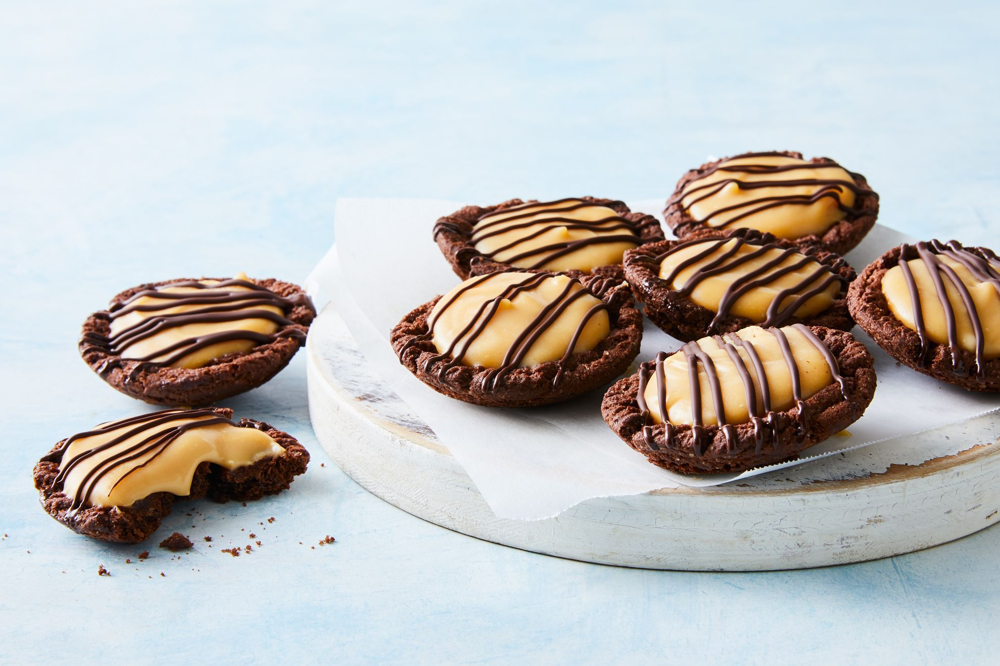

5-ingredient Caramilk custard tarts

Descriptions
With choc ripple biscuit bases, these cheat's custard
tarts have a Caramilk twist no-one will be able to resist.
Ingredients
- 2 tbsp vanilla custard powder
- 1 cup milk
- 180g block Caramilk chocolate chopped
- 24 choc ripple biscuits
- 60g dark chocolate, melted, to drizzle
Steps
- Place custard powder in a saucepan. Stir in about 2 tablespoons milk, until smooth and combined. Stir in remaining milk. Place saucepan over medium-high heat. Cook, stirring, for 8 to 10 minutes or until custard simmers and thickens. Add chopped Caramillk. Stir until smooth. Transfer to a heatproof bowl. Cover surface with plastic wrap. Set aside for 30 minutes to cool. Refrigerate for 1 hour or until cold.
- Preheat oven to 180C/160C fan-forced.
- Place 1 biscuit on top of each hole of 2 x 12-hole round-based shallow patty pans. Bake for 3 to 4 minutes or until biscuits have softened. Working very quickly, use a teaspoon to shape the biscuits into a cup, using the pan as a guide. Cool for 15 minutes.
- GWhisk custard until smooth. Divide evenly among biscuits. Refrigerate for 1 hour or until set. Drizzle with melted chocolate. Stand for 5 minutes. Serve.